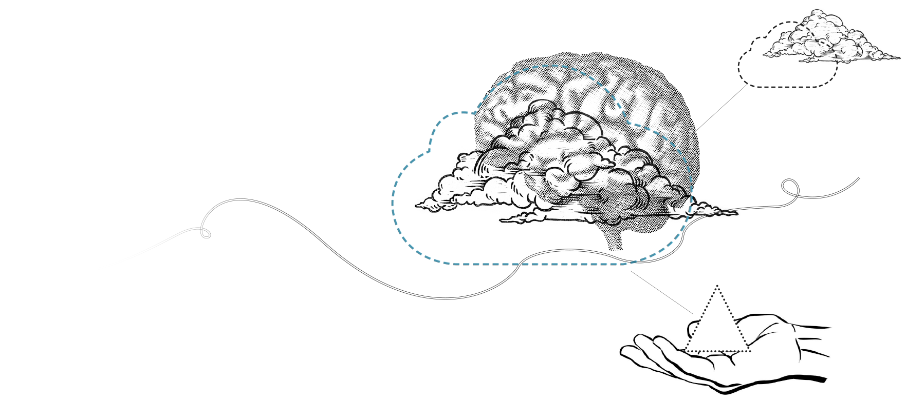

-

We pioneered telecommunications in Sri Lanka more than 150 years ago. We re-invented ourselves many times over to lead the telecom and digital revolutions in the country. We forge ahead in the spirit of pioneering and innovation.
-
Always Building the Future
Our journey commenced over 150 years ago, providing us with a solid base to launch into the future. Back then we were the first to introduce telegraph and telephony services... then more recently, Internet access... and still more recently up to 100 Mbps fibre optic ultra high speed broadband facilities across the country.
In fact, we are always building the future!
-

Getting Smart!
The future of communications lies beyond traditional legacy networks. Today, we are excited by the Smart concept – the linking of entire cities on a platform of cloud and high speed fibre optic enabled broadband services helping them manage and enhance quality and performance standards across a variety of functions such as governance, education, healthcare, transport and more. SLT is in the vanguard of ushering in a Smart Sri Lanka – facilitated by its Akaza cloud platform and high speed broadband services.
We are helping Sri Lanka ‘Get Smart’ !